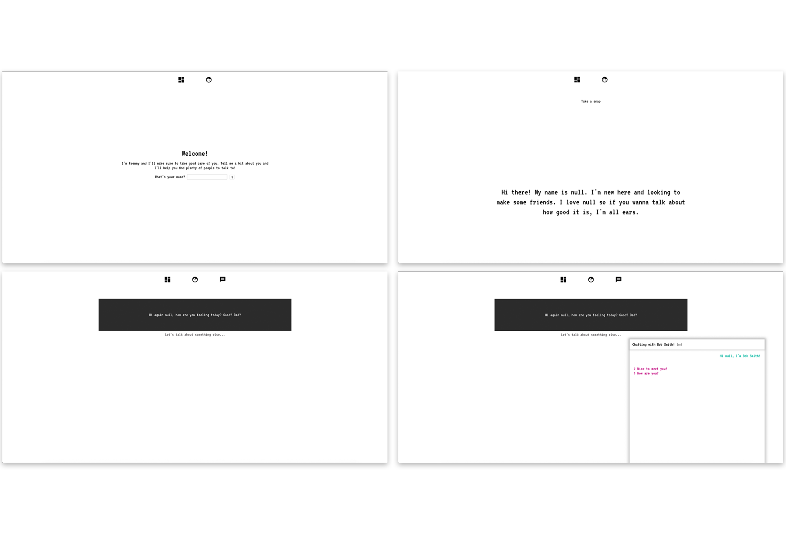

2018, digital (HTML, CS, JS / Atom, GitHub)
https://laura-hdz.github.io/dart450/final/fremmy/
Fremmy was inspired by one of the hypothetical scenario presented by Pippin Barr in his Concordia University DART450 course: “Social media - one could imagine a webpage that extends on the idea of "social media" by extending it to a near-future vision of webpages/sites that serve as our friends in the absence of real world interactions with other humans.” This lead me to think about the negative impacts of social media on our interpersonal relationships and the control they have over their users because of how consumed people become over their online persona.
I wanted to create a website and experience that would criticize the use of social media and its interference in interpersonal relationships. Fremmy enables and encourages the user to provide information about themselves through a “humanized” user-experience. It then uses the information gathered to create a profile for the user and “help" them connect with people who have similar interests or opinions. Fremmy basically encourages a loss of agency from the user. The name Fremmy came about because it felt fitting to use a catchy phonetic reference to the words friends, enemies and frenemies.